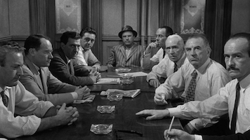

12 Angry Men
Following the closing arguments in a murder trial, the 12 members of the jury must deliberate, with a guilty verdict meaning death for the accused, an inner-city teen. As the dozen men try to reach a unanimous decision while sequestered in a room, one juror (Henry Fonda) casts considerable doubt on elements of the case. Personal issues soon rise to the surface, and conflict threatens to derail the delicate process that will decide one boy's fate.
